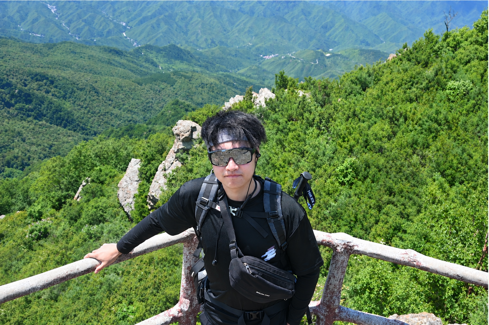
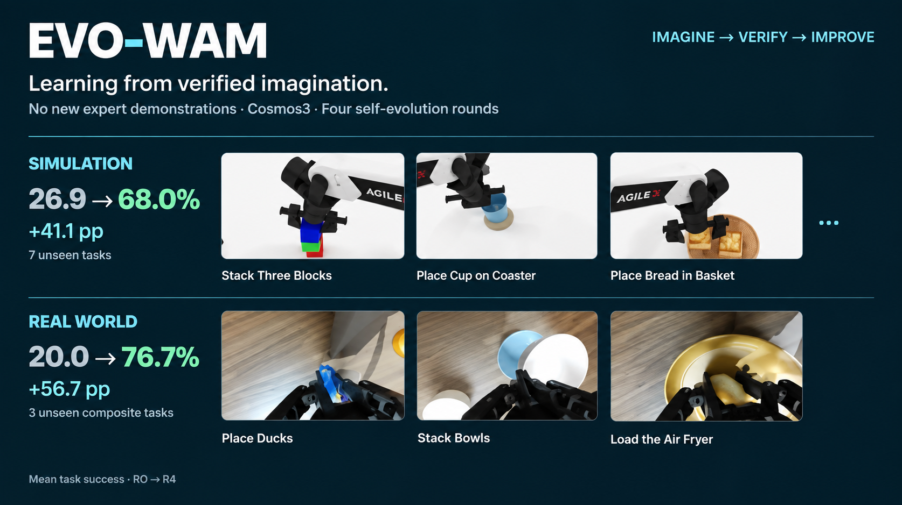
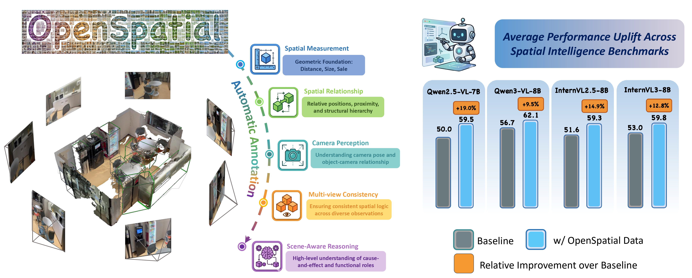
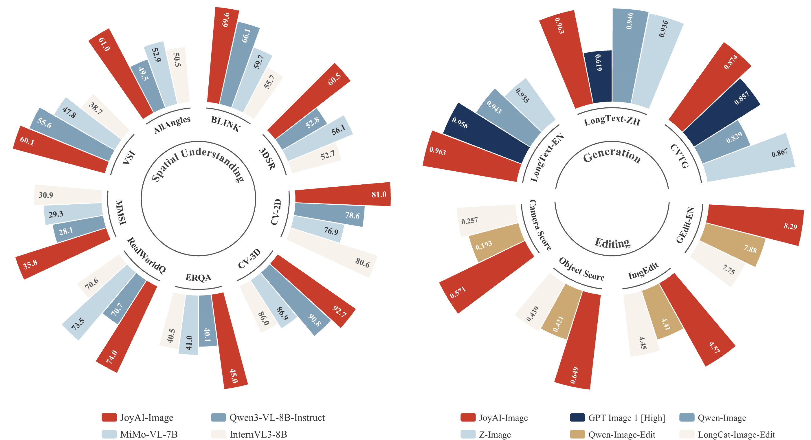
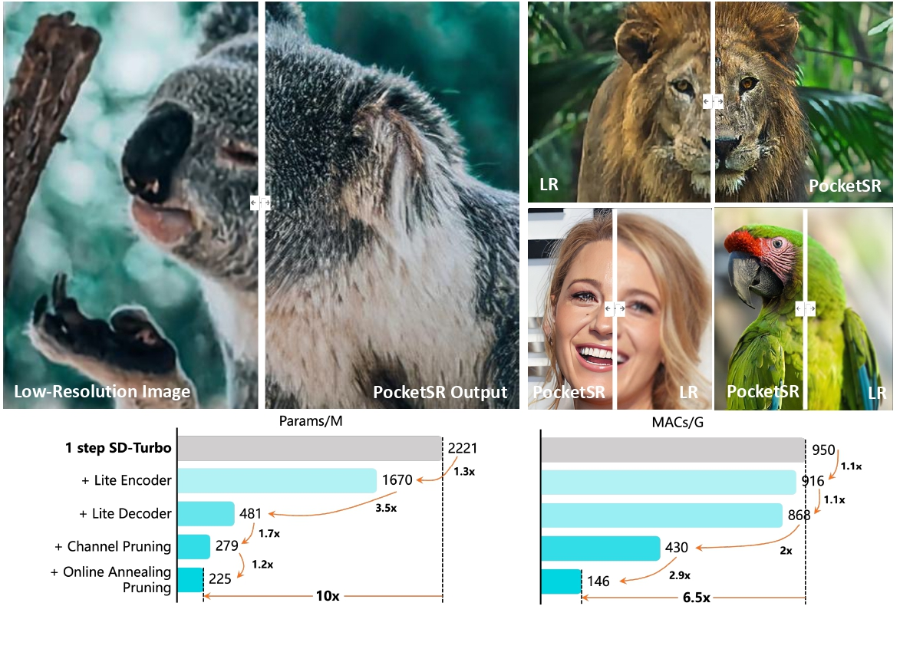
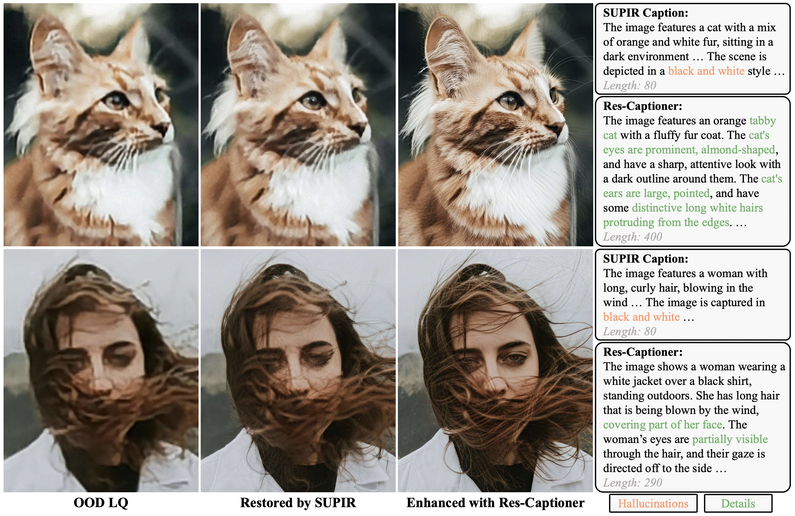
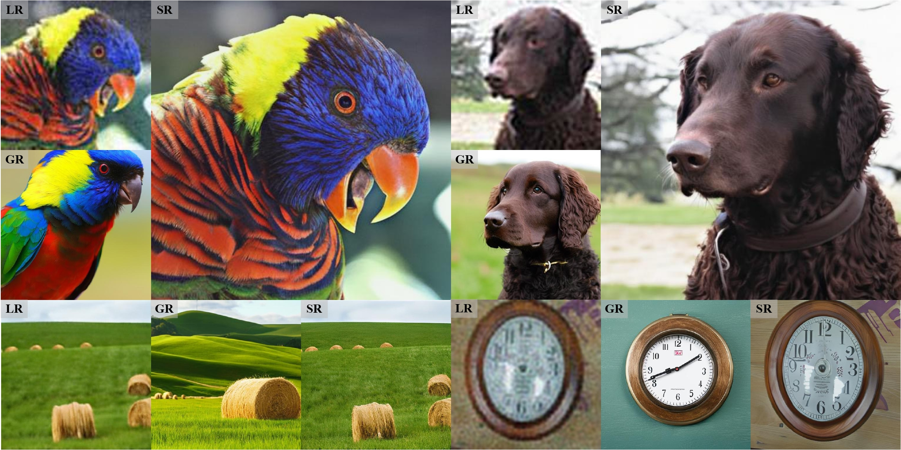

09/2026 – 06/2030
University of British Columbia
Incoming PhD in Electrical and Computer Engineering
Supervisor: Dr. Renjie Liao
The University of British Columbia
Vancouver, Canada

I am an incoming PhD student in Electrical and Computer Engineering at the University of British Columbia, supervised by Dr. Renjie Liao. I received my MPhil in Electronic and Information Engineering from Tsinghua University, supervised by Dr. Yujiu Yang, and my B.E. in Electronic Information Engineering from Nanjing University of Post and Telecommunications. In 2025, I was admitted to Monash University for a PhD program, but ultimately decided not to pursue it due to visa-related issues.
My research interests include embodied intelligence and spatial intelligence, with a focus on world action models, vision-language-action models, and enabling vision-language models with spatial understanding capabilities. Prior to this, my research primarily focused on low-level vision and generative models.
Incoming PhD in Electrical and Computer Engineering
Supervisor: Dr. Renjie Liao
MPhil in Electronic and Information Engineering
GPA 3.95/4 · Rank 18/421 · Supervisor: Dr. Yujiu Yang
B.E. in Electronic Information Engineering
GPA 4.43/5 · Rank 1/61
* Equal contribution. Links and project pages will be added as they become available.
*Core Contributor
Technical Report

Shiyang Zhou, Xionghao Wu, Wenbo Li, Shenghe Zheng, Jiyao Zhang, Songsong Yu, Yijun Yang, Jianhui Liu, Haoze Sun*, Senqiao Yang, Li Jiang, Jingyong Su, Haoyang Huang, Zhuotao Tian
Arxiv 2026

Jianhui Liu*, Haoze Sun*, Wenbo Li, Yanbing Zhang, Rui Yang, Zhiliang Zhu, Yijun Yang, Shenghe Zheng, Nan Jiang, Jiaxiu Jiang, Haoyang Huang, Tien-Tsin Wong, Nan Duan, Xiaojuan Qi
ECCV 2026


Haoze Sun*, Linfeng Jiang*, Fan Li, Renjing Pei, Zhixin Wang, Yong Guo, Jiaqi Xu, Haoyu Chen, Jin Han, Fenglong Song, Yujiu Yang, Wenbo Li
NeurIPS 2025

Haoze Sun, Wenbo Li, Jiayue Liu, Kaiwen Zhou, Yongqiang Chen, Yong Guo, Yanwei Li, Renjing Pei, Long Peng, Yujiu Yang
Arxiv 2024

Haoze Sun, Wenbo Li, Jianzhuang Liu, Haoyu Chen, Renjing Pei, Xueyi Zou, Youliang Yan, Yujiu Yang
CVPR 2024
Paper / Project Page / Code
Research Intern
08/2025 – 09/2026
Embodied AI · World Action Models
Research Intern
07/2023 – 05/2025
Image Super-Resolution · Generative Models